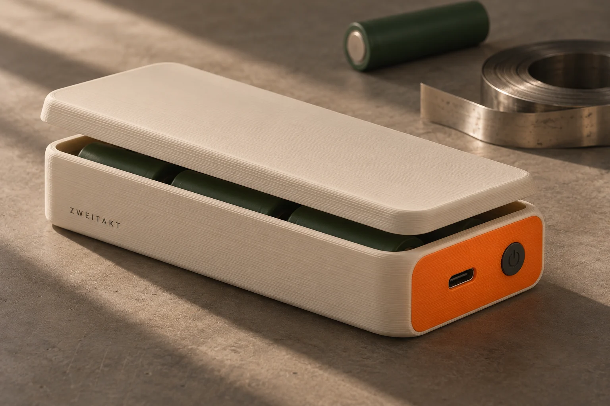
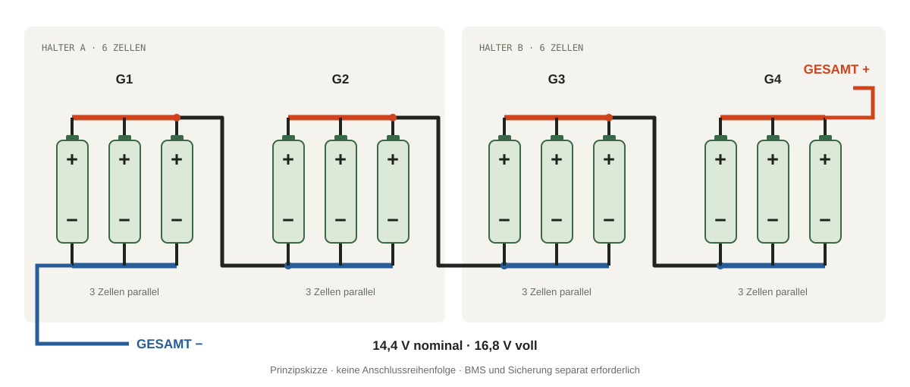

Spannung stapeln.
Vier Gruppen in Reihe: 4 × 3,6 V ergeben 14,4 V Nennspannung. Vollgeladen sind es 4 × 4,2 V = 16,8 V. Die tatsächlich gemessenen 15,2 V liegen dazwischen.
Früher Staub gesaugt.
Demnächst das MacBook geladen.
Zwölf gebrauchte Akkuzellen, ein selbst gedrucktes Gehäuse und eine Idee, die mich nicht mehr loslässt. Das wird meine Notebook-Powerbank. Hier nehme ich dich mit — vom ersten Messwert bis zum hoffentlich ersten Ladeton.
Mit in die Werkstatt
Der Dyson hielt nicht mehr lange durch. Die Akkuzellen waren damit aber noch lange keine leeren Batterien. Zumindest war das meine Vermutung.
Also Multimeter raus. Die ersten losen Zellen zeigten rund 3,9 Volt. Das zweite Pack lieferte an seinen alten Ausgängen sogar noch über 22 Volt. Für einen Staubsauger reichte die Laufzeit nicht mehr. Ob in den Zellen noch genug für eine zweite Aufgabe steckt? Genau das möchte ich herausfinden.
Mein Ziel ist eine USB-C-Powerbank für mein MacBook Pro 14″ mit M4. Die Halter für zwei Blöcke mit jeweils sechs Zellen habe ich selbst konstruiert. Das Gehäuse kommt später aus dem 3D-Drucker. Aus einer Restekiste wird ein Projekt — und aus „geht das?“ eine ziemlich spannende Frage.
ZWEITAKT steht für den zweiten Einsatz. Und ein bisschen auch dafür, dass hier nicht alles beim ersten Anlauf klappt.
„Eine normale Spannung ist ein Anfang.
Ein guter Akku ist damit noch nicht bewiesen.“
Wo ich gerade stehe: Das 4S3P-Pack ist verbunden. Ich messe insgesamt etwa 15,2 V und an jeder der vier Gruppen ungefähr 3,8 V. Einzelkapazitäten, Selbstentladung, Innenwiderstände und Verhalten unter Last sind noch nicht dokumentiert. Die 100 W sind mein Entwicklungsziel.
„Plus an Minus“ klingt einfach. Entscheidend ist, welche Plus- und Minuspole zusammenkommen. Unser Aufbau heißt 4S3P. Hier lässt er sich in Ruhe auseinandernehmen.

↔ Auf dem Handy: Grafik seitlich verschieben.
Parallel: Die drei Zellen einer Gruppe teilen sich die Arbeit.
In Reihe: Die Spannungen der vier Gruppen addieren sich.

↔ Auf dem Handy: Grafik seitlich verschieben.
Das BMS schützt den Akku. Die PD-Platine regelt Laden, Wandlung und USB-C-Aushandlung. Zwei unterschiedliche Aufgaben.
Schema herunterladenDie Skizzen erklären die Anordnung. Sicherungswert, Leitungsführung und Anschlussreihenfolge richten sich nach dem konkreten Aufbau und den Herstellerunterlagen. Zellen erst nach Zustandsprüfung und Spannungsangleichung parallel verbinden.
Vier Gruppen in Reihe: 4 × 3,6 V ergeben 14,4 V Nennspannung. Vollgeladen sind es 4 × 4,2 V = 16,8 V. Die tatsächlich gemessenen 15,2 V liegen dazwischen.
Drei Zellen parallel pro Gruppe: Bei neuwertigen 3-Ah-Zellen wären das 9 Ah. Die reale Verteilung hängt unter anderem von Innenwiderstand und Kontaktierung ab.
Das MacBook bekommt geregelte 20 V über USB-C PD. Ein Boost-Wandler hebt dafür die niedrigere Akkuspannung an. Bis zu 5 A am Ausgang ergeben das Ziel von 100 W.
Volt (V) beschreibt die elektrische Spannung. Grob wie der Druck in einer Wasserleitung.
Ampere (A) beschreibt den Strom. Im Bild der Wasserleitung: wie viel pro Zeit fließt.
Watt (W) = V × A beschreibt die Leistung in diesem Moment. 20 V × 5 A = 100 W.
Wattstunden (Wh) beschreiben die gespeicherte Energie. 100 Wh könnten idealisiert eine 20-W-Last fünf Stunden versorgen.
100 Watt sagen, wie kräftig die Powerbank liefert. Wattstunden sagen, wie lange. Beides wird gern durcheinandergeworfen.
Mein MacBook hat laut Apple 72,4 Wh Akkukapazität. Das mitgelieferte Netzteil leistet 70 W; für Schnellladen nennt Apple ein 96-W-Netzteil. 100 W sind also ein sinnvoller Ausgangswert für die Planung — kein ständiger Verbrauch des Notebooks. [1]
Die Werte rechts sind ein Rechenbeispiel. Die Kapazität meiner gebrauchten Zellen ist noch offen. Der Rechner ersetzt keine Messung.
Annahmen: 3,6 V Nennspannung je Zelle, gleiche Kapazität und ideale Stromaufteilung. Tiefere Akkuspannung erhöht den Strom. BMS-Abschaltung, Zellverluste und Ladewirkungsgrad im MacBook sind nicht modelliert.
So viel könnte allein der Wandler bei 100 W und angenommenen 90 % Wirkungsgrad verheizen. Für ein gedrucktes Gehäuse ist das eine echte Konstruktionsaufgabe.
Das ist kein Hochglanz-Unboxing. Das ist ein Werkstatttagebuch. Mit gebrauchten Teilen, offenen Fragen und einem Multimeter, das man auch mal an die falsche Stelle hält.
Zuerst standen nur 7,4 V auf dem Display. Hatte ich alles falsch verbunden? Die Fotos beider Seiten halfen: Ich hatte zunächst nur einen Teil der Spannungskette erwischt. An den tatsächlichen Endanschlüssen waren es etwa 15,2 V. Mein Merksatz seitdem: Erst die Messpunkte verstehen, dann die Brücken verdächtigen.
Ladegerät, Nickelband, Punktschweißgerät und die konstruierten Halter sind vorhanden. Hier stehen die fehlenden Komponenten. Keine Affiliate-Links. Keine erfundenen Lagerbestände.
4S3P bleibt gesetzt. IP2368 plus separates BMS ist der bisherige Plan. Neu gefunden: ein 4S-Powerbank-Modul bei Roboter-Bausatz mit deutschem Artikelstandort. Beide USB-Module sind Alternativen — ich benötige nur eines. Eine endgültige Bestellung und Funktionsprüfung stehen noch aus.
Im Angebot ausdrücklich „4S 16.8V“ wählen. Laden und Entladen über USB-C; separates BMS einplanen. Artikelstandort China. Die Angebotsseite nennt 100 W, eine Dauerlastprüfung dieses Exemplars fehlt.
4S-Li-Ion-Einstellung, 20-V/5-A-Profil, Ladebegrenzung, Temperaturfühler, Akku-Kapazitätseinstellung und Kühlung. Der Chipname allein garantiert weder die richtige Konfiguration noch 100 W dauerhaft.
Deutscher Shop, beim Abruf sofort verfügbar: 38,59 €, angegebene Lieferzeit 1–3 Tage. Das Verkäuferangebot auf eBay nennt Saarbrücken. Zwei USB-C- und zwei USB-A-Ports; laut Händler bidirektionales PD mit 20 V/5 A.
Dokumentation unvollständig: Schutzfunktionen, Balancing, Zell-Temperaturmessung, Port-Leistungsverteilung und Betrieb mit externem BMS schriftlich klären. 4,20 V Ladeschluss je Gruppe bestätigen. Die im Shop genannte „Kapazität 40.000MA“ ist keine mitgelieferte Akkuenergie. Der verbaute Chip wird nicht eindeutig benannt. Das ist eine Alternative zur IP2368-Platine, keine bestätigte IP2368-Ausführung.
Produktinformationen (PDF) ↗Separater Zellschutz mit passivem Balancing, Bluetooth und externen Temperaturfühlern laut Händler. Beim Abruf zwei vorrätig. Für 4S-Li-Ion konfigurieren lassen; LiFePO₄-Einstellungen passen nicht.
Exakte Modellnummer, Anschlussplan, Lieferumfang der Fühler und Balancerleitung sowie Temperaturschwellen bestätigen. Die Maßangaben im Angebot widersprechen sich. Auch den tatsächlichen Versandort bestätigen lassen; eine deutsche Kontaktadresse belegt kein deutsches Lager.
Kurze Hauptleitungen mit ungefähr 2,5 mm² als Planungsansatz. AWG14 entspricht etwa 2,08 mm² und ist nicht exakt 2,5 mm². Querschnitt, Isolation und Verlegung müssen zum Strom und zur Sicherung passen.
Ein Halter mit 2,5-mm²-Leitung und eine zur Bauform passende DC-Sicherung gehören nahe an den Akku. Der Sicherungswert ist noch offen und folgt aus dem schwächsten Strompfad, der Abschaltkennlinie und dem Einschaltstrom.
Passende Pluspolringe und flächige Isolation zwischen Nickel, Zellgehäusen und Elektronik. Vorhandene Ringe und Zellschläuche prüfen. Polyimidband allein ersetzt keinen mechanischen Scheuerschutz.
Ein Sortiment für Leitungsverbindungen. Zusätzliche Isolierplatten, Kantenschutz, Platinenabstandshalter und Zugentlastung werden nach dem Gehäuselayout ergänzt. Nicht mit Zellschrumpfschlauch verwechseln.
Für eine trennbare Hauptleitung. Der verlinkte Artikel ist nur eine Hälfte; die passende Gegenhälfte gehört dazu. Auf der Akkuseite müssen die stromführenden Kontakte gegen Berührung geschützt sein.
Für 100 W bei 20 V muss das Kabel 5 A unterstützen. Beispiel: Anker 333, 100 W. Ein passendes vorhandenes Kabel kann diese Position ersetzen. Ein 240-W-Kabel ist ebenfalls möglich.
Elektrisch isolierende Wärmeleitpads und Kühlkörper passend zur Platine; NTC-Fühler passend zum BMS; Balancerleitung mit korrektem Stecker; Schrauben, Abstandshalter und zugentlastete Buchsen. Für den Leistungstest: ein USB-PD-Messgerät und eine geeignete 100-W-Last, zusätzlich Temperaturmessung.
Hier gibt es bewusst noch keinen pauschalen Warenkorb: Bauform, Messbereich und Pinbelegung müssen zur tatsächlich gewählten Elektronik passen. Kapazitätstester, Nickelband und Punktschweißgerät sind bereits vorhanden.
IP2368 + JBD-BMS beziehungsweise RBS16405 + JBD-BMS. Ohne Versand, Kabel, Isolation, Sicherung und Kühlung. Alternative B mit externem BMS erst nach bestätigter Kompatibilität. Das ist ein Lernprojekt — ein Preisvorteil gegenüber einer fertigen Powerbank ist nicht bewiesen.
Preise und Lageranzeigen sind Momentaufnahmen des Abrufs vom 07.11.2026, keine Live-Abfrage. Lieferort und Varianten können Preis und Verfügbarkeit ändern. Die verlinkten Angebote sind recherchierte Kandidaten, keine bereits getestete Stückliste.
Second Life ist eine Idee. Sicherheit ist die Voraussetzung dafür.
Der kurze Einsatz im Staubsauger ist der Anlass für dieses Projekt, kein Gesundheitszeugnis der Zellen. Eine alte Zelle kann noch 3,8 V anzeigen und unter Last trotzdem einbrechen. In einer Parallelgruppe sind ihre Spannungen zwangsweise gleich — nach dem Verbinden lässt sich daraus der Zustand der Einzelzellen nicht mehr ablesen.
Vor dem Betrieb fehlen deshalb dokumentierte Zelltests. Falls diese nicht vor dem Verbinden erfolgt sind, braucht es eine fachgerechte Prüfung und gegebenenfalls eine kontrollierte Auftrennung. Aufgeblähte, verformte, undichte oder mechanisch beschädigte Zellen gehören nicht in diesen Aufbau.
Der Schutz besteht aus mehreren Teilen: geeignete Zellen, gute Verbinder, Isolation, Sicherung, BMS mit Temperaturüberwachung und eine zur Chemie passende Ladeelektronik. Ein BMS kann weder eine schlechte Schweißstelle reparieren noch eine geschädigte Zelle gesund machen.
Das Druckgehäuse soll Zellen sicher halten, Elektronik trennen und Wärme abführen. Normales PLA oder PETG ist kein feuerfestes Akkugehäuse. Ich lege Material und Lüftung erst nach Temperaturmessungen fest. Offene Nickelbänder werden abgedeckt; der Pack liegt auf einer nicht leitenden, nicht brennbaren Unterlage.
Diese Seite dokumentiert meinen Prototyp. Sie ist keine Freigabe zum Nachbau und kein universeller BMS-Anschlussplan. Die tatsächliche Anschlussreihenfolge kommt aus den Unterlagen der gewählten Platine.
Ein Haken bedeutet hier „erledigt“. Nicht „wird schon passen“. Die offenen Punkte bleiben sichtbar, bis echte Messungen sie schließen.
Zwei Sechserhalter konstruiert, zwölf Zellen verbunden. Gesamtspannung ca. 15,2 V und vier Gruppenspannungen ca. 3,8 V gemessen.
Typen, Kapazitäten, Selbstentladung und Innenwiderstände dokumentieren. Isolation und Schweißstellen prüfen. Ähnliche Gruppenkapazitäten sicherstellen; gleiche Spannung allein reicht nicht.
Exakte Platinenvariante, 4,2-V-Chemie, Schutzfunktionen, Fühler, Pinbelegung und Leistungsgrenzen klären. Dann Sicherung und Strompfade dimensionieren.
Erst Elektronik und Schutzverhalten prüfen, dann die Last stufenweise erhöhen. Gruppenspannungen und Temperaturen beobachten. 100 W erst nach nachgewiesener thermischer und elektrischer Eignung.
Finale Maße abnehmen, Isolation, Kühlung und Zugentlastung integrieren. Nutzbare USB-Energie in Wh messen. Erst dann folgt der Praxistest am MacBook und ein ehrliches Fazit.
Das ergäbe bis zu 50,4 V und würde eine andere Schutz- und Ladeelektronik verlangen. Für das festgelegte 4S-System ist das unpassend. Zwölf Zellen lassen sich als vier Dreiergruppen gut auf meine zwei Halter verteilen.
Das weiß ich erst nach einer Energiemessung. Zwölf neuwertige 3-Ah-Zellen hätten rechnerisch 129,6 Wh. Meine gebrauchten Zellen können deutlich darunter liegen. Dazu kommen Verluste und der Energiebedarf des laufenden MacBooks. Eine konkrete Anzahl an Vollladungen verspreche ich deshalb noch nicht.
Der Spannungswandler erhöht die Spannung. Dafür nimmt er auf der Akkuseite mehr Strom auf. Beispiel: 100 W Ausgang bei 14,4 V und angenommenen 90 % Wirkungsgrad benötigen etwa 7,72 A aus dem Pack. Energie wird gewandelt, nicht herbeigezaubert.
Eine Spannungsmessung zeigt keine Kapazität in Ah. Dafür wird ein kontrollierter Entladevorgang mit Zeit- und Strommessung benötigt. Eine direkte Strommessung zwischen Plus und Minus erzeugt einen Kurzschluss. Die Multimeterleitungen gehören für unsere Spannungsprüfung in COM und V.
Nein. Ein Balancer gleicht Ladeunterschiede aus. Das BMS muss zusätzlich beispielsweise Überladung, Tiefentladung und Überstrom überwachen und abschalten können. Welche Funktionen vorhanden sind, muss für das konkrete Modell belegt sein.
Die Zellhalter habe ich konstruiert. Veröffentlicht sind hier bisher die Projektseite und die Prinzipskizzen. Finale STL-Dateien für das Gehäuse folgen erst nach Auswahl und Vermessung der Elektronik. Das Titelbild zeigt eine Designstudie.
Ich halte meine Messwerte, Modellannahmen und Händlerangaben auseinander. Hier liegen die Quellen hinter dem Projekt.
Ein ähnliches Projekt ansehenGreatScott! · 100-W-Powerbank · Englisch ↗72,4 Wh, 70-W-Netzteil und Schnellladen mit 96 W.
Herstellerdatenblatt als Händlerkopie: 3,6 V nominal, 3,0 Ah typisch, 4,2 V Ladeschluss. Neuzelldaten sind keine Messwerte meiner gebrauchten Zellen.
Herstellerunterlage als Händlerkopie. Chipfunktionen und Konfiguration; keine Garantie für die Auslegung eines beliebigen Moduls.
Händlerangaben zum alternativen 4S-Modul. Offene Schutz- und Anschlussfragen stehen bei der Teileliste.
Funktionen und Angebotsstand; genaue Modellzuordnung noch zu bestätigen.